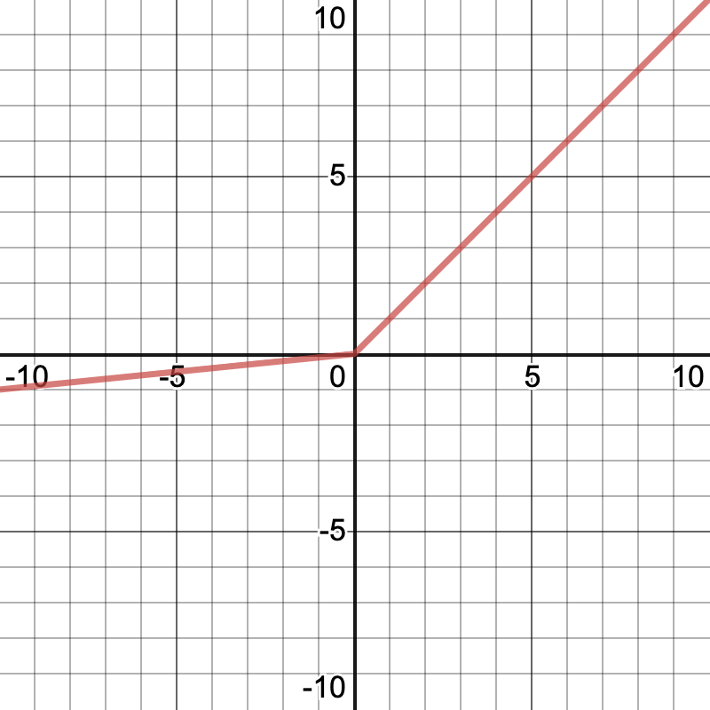
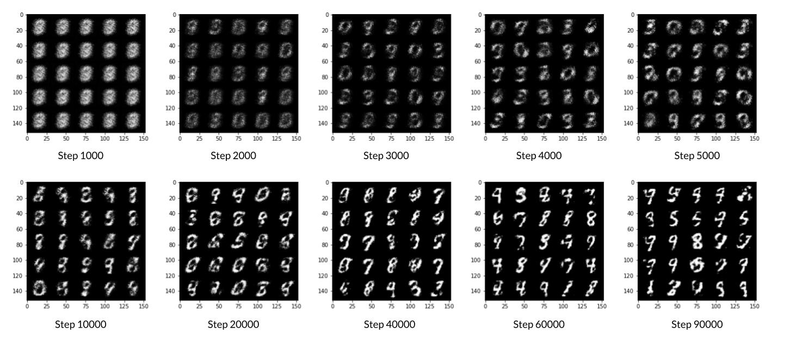

Your First GAN
Goal
In this notebook, you’re going to create your first generative adversarial network (GAN) for this course! Specifically, you will build and train a GAN that can generate hand-written images of digits (0-9). You will be using PyTorch in this specialization, so if you’re not familiar with this framework, you may find the PyTorch documentation useful. The hints will also often include links to relevant documentation.
Learning Objectives
- Build the generator and discriminator components of a GAN from scratch.
- Create generator and discriminator loss functions.
- Train your GAN and visualize the generated images.
Getting Started
You will begin by importing some useful packages and the dataset you will use to build and train your GAN. You are also provided with a visualizer function to help you investigate the images your GAN will create.
1 | import torch |
MNIST Dataset
The training images your discriminator will be using is from a dataset called MNIST. It contains 60,000 images of handwritten digits, from 0 to 9, like these:

You may notice that the images are quite pixelated — this is because they are all only 28 x 28! The small size of its images makes MNIST ideal for simple training. Additionally, these images are also in black-and-white so only one dimension, or “color channel”, is needed to represent them (more on this later in the course).
Tensor
You will represent the data using tensors. Tensors are a generalization of matrices: for example, a stack of three matrices with the amounts of red, green, and blue at different locations in a 64 x 64 pixel image is a tensor with the shape 3 x 64 x 64.
Tensors are easy to manipulate and supported by PyTorch, the machine learning library you will be using. Feel free to explore them more, but you can imagine these as multi-dimensional matrices or vectors!
Batches
While you could train your model after generating one image, it is extremely inefficient and leads to less stable training. In GANs, and in machine learning in general, you will process multiple images per training step. These are called batches.
This means that your generator will generate an entire batch of images and receive the discriminator’s feedback on each before updating the model. The same goes for the discriminator, it will calculate its loss on the entire batch of generated images as well as on the reals before the model is updated.
Generator
The first step is to build the generator component.
You will start by creating a function to make a single layer/block for the generator’s neural network. Each block should include a linear transformation to map to another shape, a batch normalization for stabilization, and finally a non-linear activation function (you use a ReLU here) so the output can be transformed in complex ways. You will learn more about activations and batch normalization later in the course.
1 | # UNQ_C1 (UNIQUE CELL IDENTIFIER, DO NOT EDIT) |
1 | # Verify the generator block function |
Success!
Now you can build the generator class. It will take 3 values:
- The noise vector dimension
- The image dimension
- The initial hidden dimension
Using these values, the generator will build a neural network with 5 layers/blocks. Beginning with the noise vector, the generator will apply non-linear transformations via the block function until the tensor is mapped to the size of the image to be outputted (the same size as the real images from MNIST). You will need to fill in the code for final layer since it is different than the others. The final layer does not need a normalization or activation function, but does need to be scaled with a sigmoid function.
Finally, you are given a forward pass function that takes in a noise vector and generates an image of the output dimension using your neural network.
Optional hints for Generator
1. The output size of the final linear transformation should be im_dim, but remember you need to scale the outputs between 0 and 1 using the sigmoid function.
2. [nn.Linear](https://pytorch.org/docs/master/generated/torch.nn.Linear.html) and [nn.Sigmoid](https://pytorch.org/docs/master/generated/torch.nn.Sigmoid.html) will be useful here.
1 | # UNQ_C2 (UNIQUE CELL IDENTIFIER, DO NOT EDIT) |
1 | # Verify the generator class |
Success!
Noise
To be able to use your generator, you will need to be able to create noise vectors. The noise vector z has the important role of making sure the images generated from the same class don’t all look the same — think of it as a random seed. You will generate it randomly using PyTorch by sampling random numbers from the normal distribution. Since multiple images will be processed per pass, you will generate all the noise vectors at once.
Note that whenever you create a new tensor using torch.ones, torch.zeros, or torch.randn, you either need to create it on the target device, e.g. torch.ones(3, 3, device=device), or move it onto the target device using torch.ones(3, 3).to(device). You do not need to do this if you’re creating a tensor by manipulating another tensor or by using a variation that defaults the device to the input, such as torch.ones_like. In general, use torch.ones_like and torch.zeros_like instead of torch.ones or torch.zeros where possible.
Optional hint for get_noise
1.
You will probably find [torch.randn](https://pytorch.org/docs/master/generated/torch.randn.html) useful here.
1 | # UNQ_C3 (UNIQUE CELL IDENTIFIER, DO NOT EDIT) |
1 | # Verify the noise vector function |
Success!
Discriminator
The second component that you need to construct is the discriminator. As with the generator component, you will start by creating a function that builds a neural network block for the discriminator.
Note: You use leaky ReLUs to prevent the “dying ReLU” problem, which refers to the phenomenon where the parameters stop changing due to consistently negative values passed to a ReLU, which result in a zero gradient. You will learn more about this in the following lectures!
| REctified Linear Unit (ReLU) | Leaky ReLU |
|---|---|
 |
 |
1 | # UNQ_C4 (UNIQUE CELL IDENTIFIER, DO NOT EDIT) |
1 | # Verify the discriminator block function |
Success!
Now you can use these blocks to make a discriminator! The discriminator class holds 2 values:
- The image dimension
- The hidden dimension
The discriminator will build a neural network with 4 layers. It will start with the image tensor and transform it until it returns a single number (1-dimension tensor) output. This output classifies whether an image is fake or real. Note that you do not need a sigmoid after the output layer since it is included in the loss function. Finally, to use your discrimator’s neural network you are given a forward pass function that takes in an image tensor to be classified.
1 | # UNQ_C5 (UNIQUE CELL IDENTIFIER, DO NOT EDIT) |
1 | # Verify the discriminator class |
Success!
Training
Now you can put it all together!
First, you will set your parameters:
- criterion: the loss function
- n_epochs: the number of times you iterate through the entire dataset when training
- z_dim: the dimension of the noise vector
- display_step: how often to display/visualize the images
- batch_size: the number of images per forward/backward pass
- lr: the learning rate
- device: the device type, here using a GPU (which runs CUDA), not CPU
Next, you will load the MNIST dataset as tensors using a dataloader.
1 | # Set your parameters |
Now, you can initialize your generator, discriminator, and optimizers. Note that each optimizer only takes the parameters of one particular model, since we want each optimizer to optimize only one of the models.
1 | gen = Generator(z_dim).to(device) |
Before you train your GAN, you will need to create functions to calculate the discriminator’s loss and the generator’s loss. This is how the discriminator and generator will know how they are doing and improve themselves. Since the generator is needed when calculating the discriminator’s loss, you will need to call .detach() on the generator result to ensure that only the discriminator is updated!
Remember that you have already defined a loss function earlier (criterion) and you are encouraged to use torch.ones_like and torch.zeros_like instead of torch.ones or torch.zeros. If you use torch.ones or torch.zeros, you’ll need to pass device=device to them.
1 | # UNQ_C6 (UNIQUE CELL IDENTIFIER, DO NOT EDIT) |
1 | def test_disc_reasonable(num_images=10): |
Success!
1 | # UNQ_C7 (UNIQUE CELL IDENTIFIER, DO NOT EDIT) |
1 | def test_gen_reasonable(num_images=10): |
Success!
Finally, you can put everything together! For each epoch, you will process the entire dataset in batches. For every batch, you will need to update the discriminator and generator using their loss. Batches are sets of images that will be predicted on before the loss functions are calculated (instead of calculating the loss function after each image). Note that you may see a loss to be greater than 1, this is okay since binary cross entropy loss can be any positive number for a sufficiently confident wrong guess.
It’s also often the case that the discriminator will outperform the generator, especially at the start, because its job is easier. It’s important that neither one gets too good (that is, near-perfect accuracy), which would cause the entire model to stop learning. Balancing the two models is actually remarkably hard to do in a standard GAN and something you will see more of in later lectures and assignments.
After you’ve submitted a working version with the original architecture, feel free to play around with the architecture if you want to see how different architectural choices can lead to better or worse GANs. For example, consider changing the size of the hidden dimension, or making the networks shallower or deeper by changing the number of layers.
But remember, don’t expect anything spectacular: this is only the first lesson. The results will get better with later lessons as you learn methods to help keep your generator and discriminator at similar levels.
You should roughly expect to see this progression. On a GPU, this should take about 15 seconds per 500 steps, on average, while on CPU it will take roughly 1.5 minutes:

1 | # UNQ_C8 (UNIQUE CELL IDENTIFIER, DO NOT EDIT) |